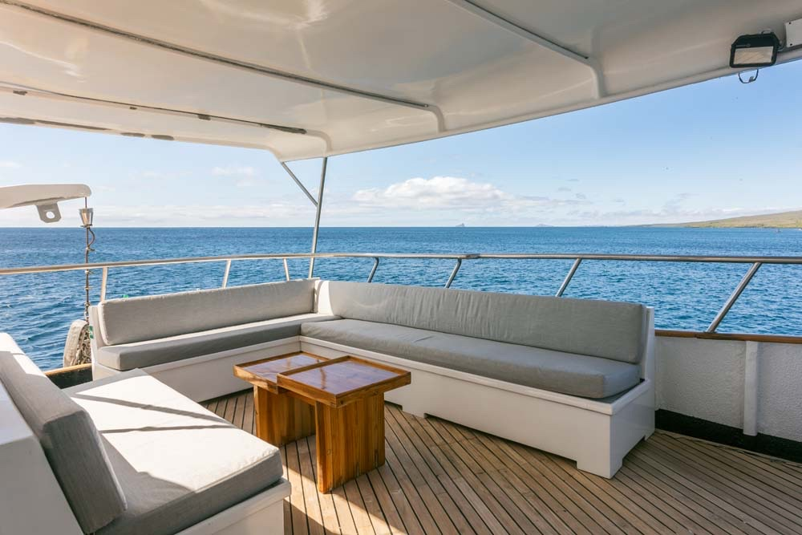

Life On Board
A small-group expedition with space to learn
With a maximum of 14 guests, the experience stays personal. The boat becomes the base for diving, workshops, marine biology talks, editing time and the quiet processing that happens after a big day in the water.
Brooke and Nush lead photography and video sessions across the trip, from in-water decisions to storytelling and post-dive review. Guests also receive digital copies of professional trip imagery and footage.
A one-night pre-trip stay in San Cristobal is included in the source brochure, making the arrival flow cleaner before boarding the liveaboard.

7
nights aboard Galapagos Sky
19
planned dives across the route
14
guest maximum on the charter
3
land excursions included